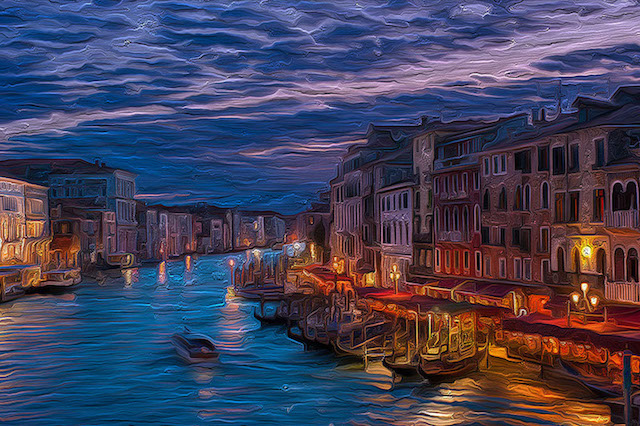
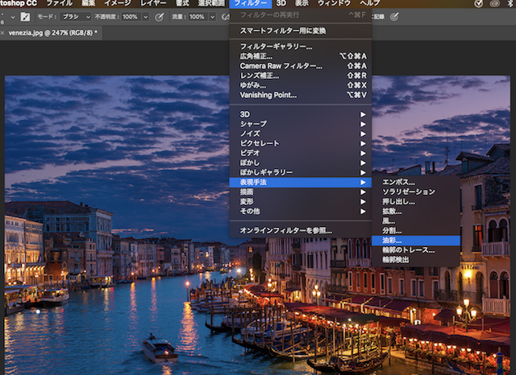

2nd Sprint: 2018/5/31(thu)~6/6(wed)
GSuite
5/31(thu)3,4講時
1日目の授業は
みんなの作ったサイトの様子を先生が確認した。それで何人かにどこを頑張ったかなどの話を聞いた。
頑張った部分 ・HTMLを使いこなせるように何回も使った。
頑張れなかった部分 ・CSSは少し触っただけだからもう少し使うようにする
Photoshop
6/1(fri)1-4講時
2日目の授業はPhotoshopを使って画像のレタッチをした。
自分はヴェネツィアが好きなのでヴェネツィアの夜景の画像を使うことにした。
どんな感じにするか悩んだ末に油画っぽい感じにレタッチしようと決めた。
加工前
加工後

結果、見事に油画っぽい感じにレタッチできていて個人的には満足。
作業過程

フィルター ⇨ 表現手法 ⇨ 油彩
これだけでお手軽に油画風の画像を作ることができた。
あとは『ぼかしい』や『シャープ』等をいじって自分好みにした。
自分はPhotoshop自体今回初めて使うので最初は戸惑ってしまった。
使ってるうちに慣れてはきたがまだまだ使いこなせていないな。という風に感じた。
Premiere Pro
5/9(wed)1-4講時
３回目の授業はPremiere Proを使って映像編集をした。
自分は今回たくさんの写真を撮りそれを繋げることでストップモーションの動画を作った。
https://youtu.be/o4VoBr9SLu
Premiere Proを使うのも今回が初めてだった。
Photoshop以上に使い方が難しくとても苦戦した。
なんとか形にはなったがあまり納得のいくものは作れなかった。